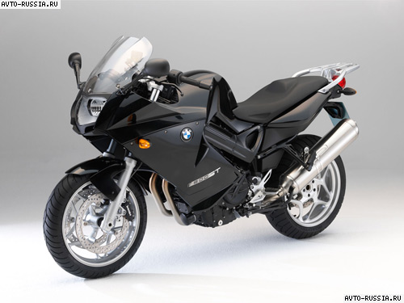
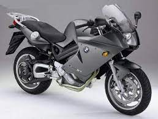
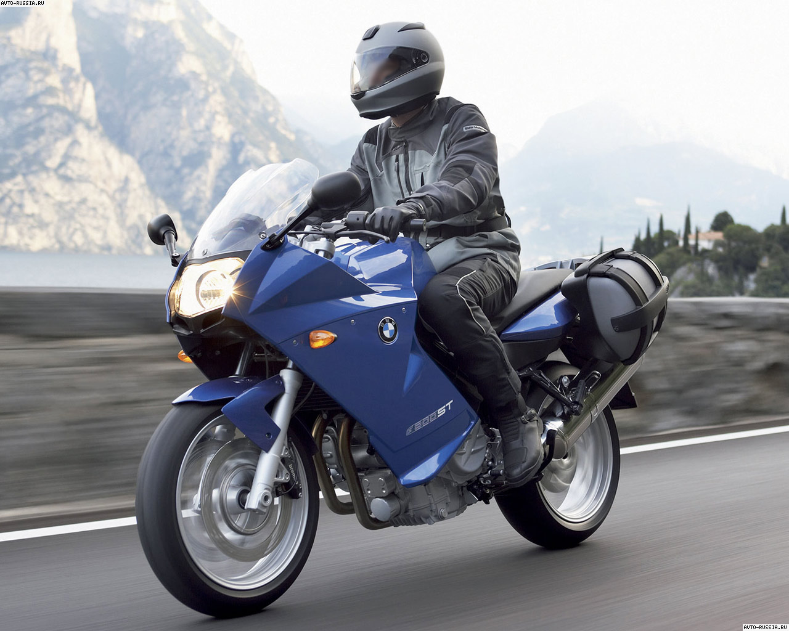

BMW 800
BMW 800
Синий вариант BMW 800ST

Прочные пластиковые обвесы, приемлемая цена. Двигатель мне очень нравится.
Ровный
без
подхватов. Темперамент у него не взрывной, скорее троллейбусный. Графики
крутящего
момента я думаю должны быть ровными как струнка.
Параметры
Инструкция
Отзывы
Синий вариант BMW 800ST

На этом мотоцикле очень удобная посадка, что позволяет проезжать 200-300 км без
усталости. Боковые кофры вместительны и вмещают в себя много всего, что
пригодится в
дальних поездках. Из комфорта очень радует подогрев ручек, функциональная панель
приборов, все четко читается, плавность хода, легкая управляемость.
скорость
красота
элегантность
Чёрный вариант BMW 800ST

B нем есть масса наворотов про которые ничего сказать не могу так как без них
никогда не катался, так что перечислю то что есть, а именно демпфер руля,
гаситель
рывков, АБС. Тормоза не комбинированные. Компьютер может показывать давление в
шинах,
расход (мгновенный и средний), температуру и т. д. Без откровений короче, но то
что
нужно есть.
скорость
красота
элегантность
Чёрный вариант BMW 800ST

Под стать двигателю и ручка газа. Для того, чтобы ее полностью открыть, придется
перехватывать ручку или самого начала схватить с запасом. Под газ мотоцикл
ускоряется
уверенно и ровно. Без остервенения. Но в то же время в сразу же оказываешься
впереди
потока.
У мотоцикла хорошая тяга в нижнем диапазоне оборотов. В пробках и городе то что
надо.
Параметры
Инструкция
Отзывы
Мотоциклист на BMW 800ST

Мне кажется это идеальный двигатель для начинающего. На трассе держится хорошо и
стабильно. От грузовиков или легковушек не сдувает. Видимо длинная база играет
свою
роль. На счет управляемости ничего сказать не могу — просто не с чем сравнивать.
Но
радости от поворотов на серпантинах полные штаны.
Скорость
Мотоциклист с №2 BMW 800ST

А вообще по чужим отзывам рулится железяка хорошо для своего класса. В городе
размер
еще позволяет шнырять между машинами, но все-таки требует осторожности. Не
скутер но
и не тяжелый турер. Если снять кофры то проворность, может быть, слега
увеличится.
Скорость